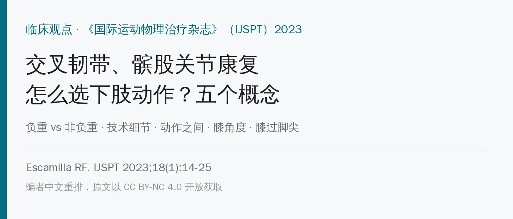
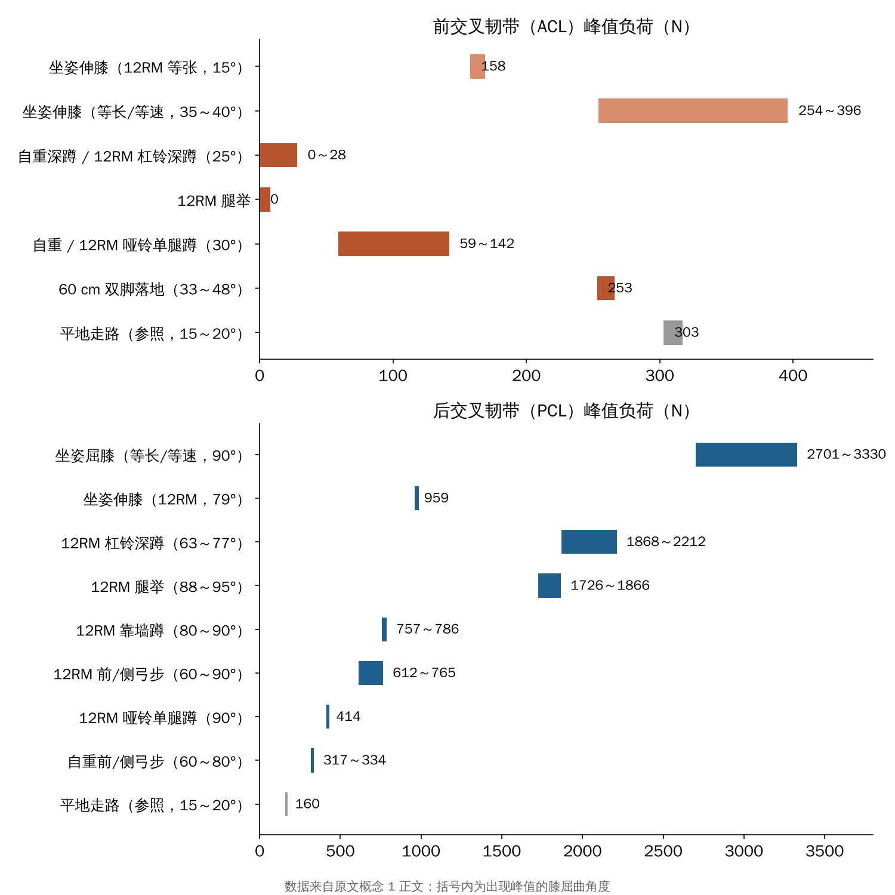
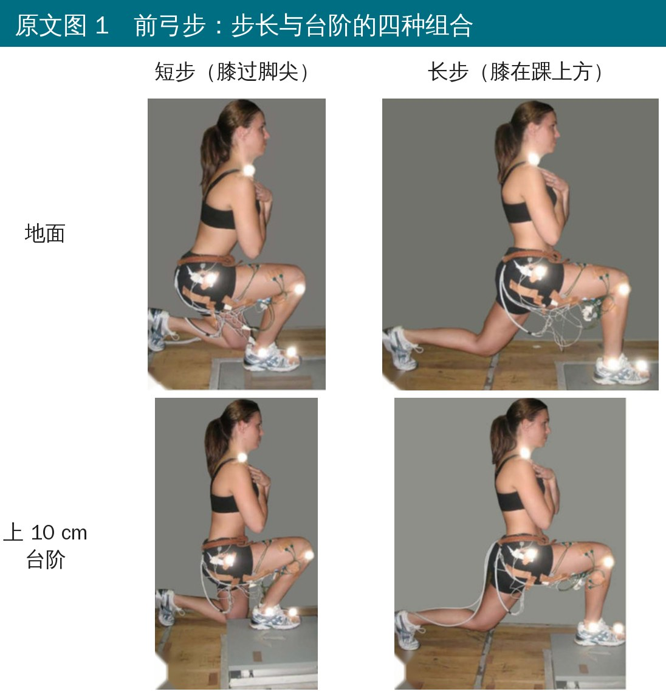
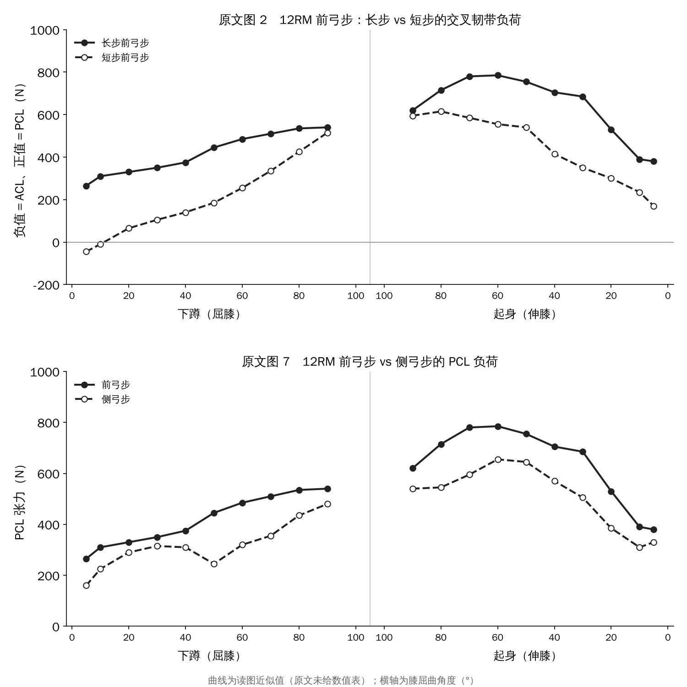
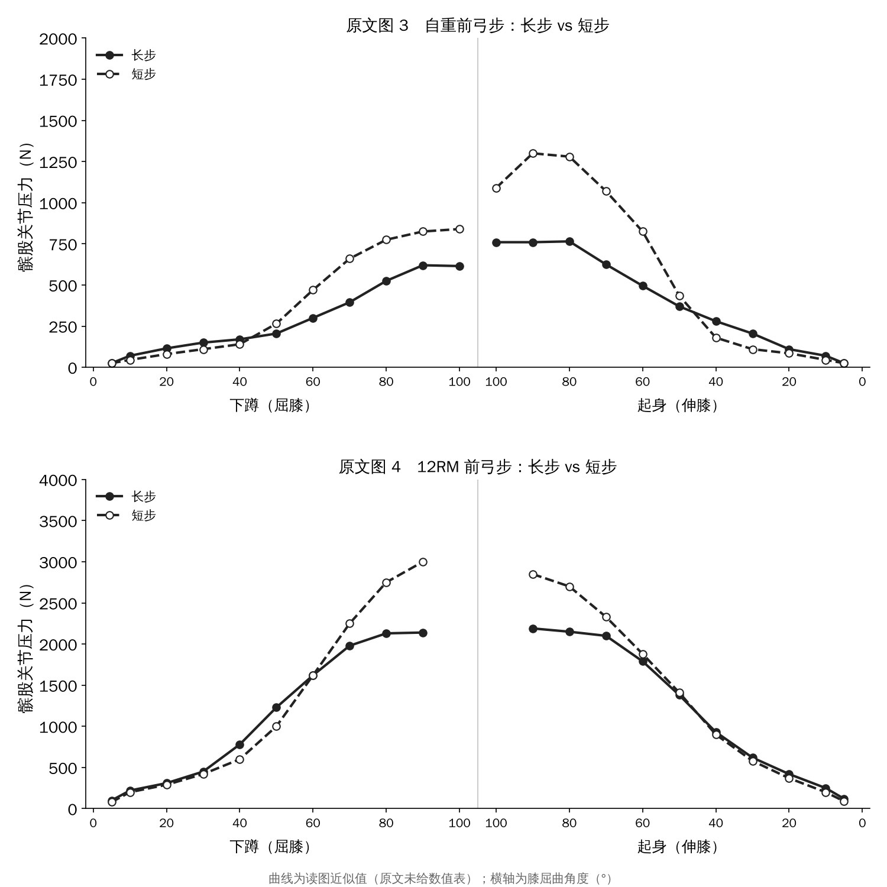
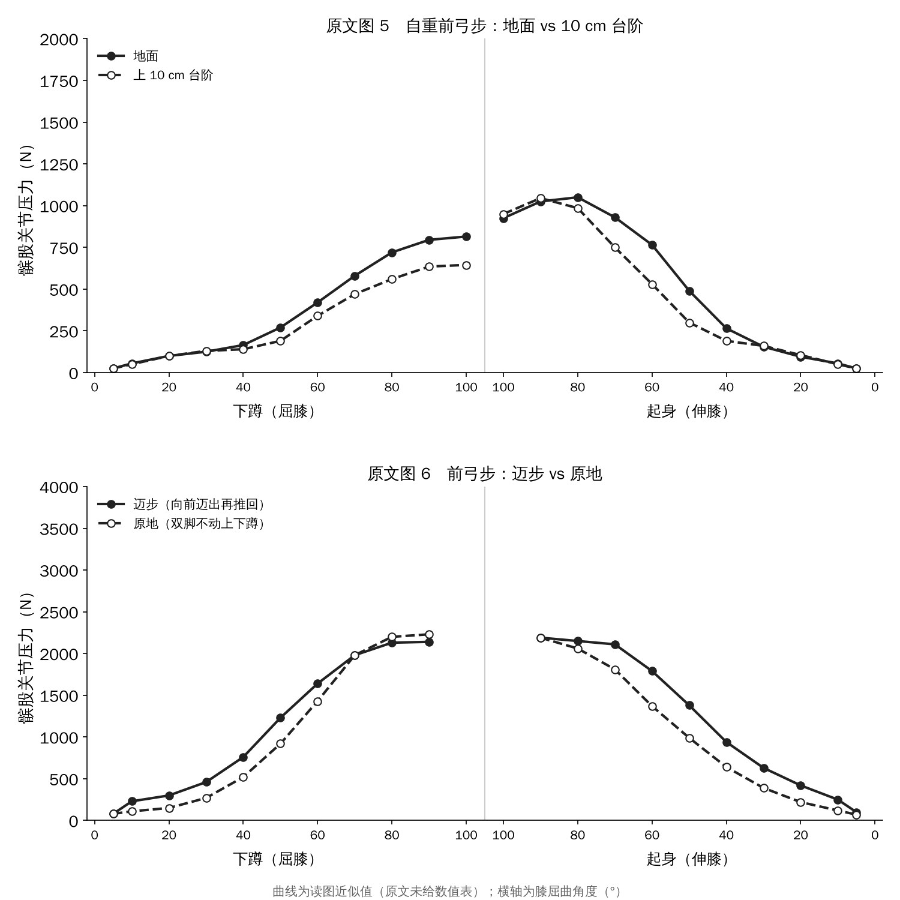
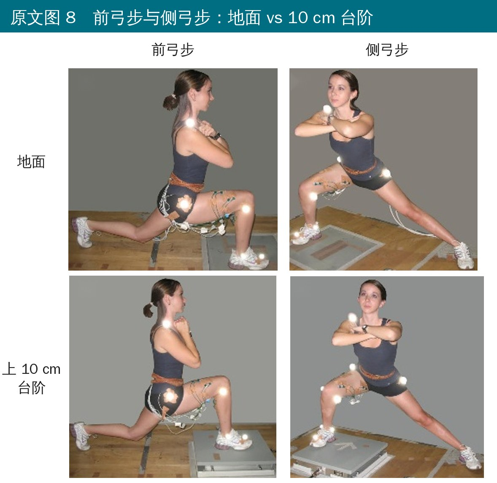
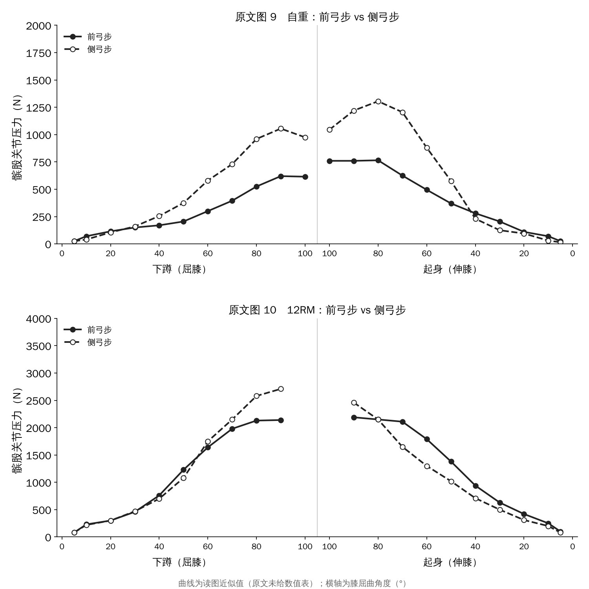

🔖原文信息（编者中文重排）
📚 文献信息
▪ Escamilla RF. My Top Five Concepts for Selecting Lower Extremity Exercises For Cruciate Ligament and Patellofemoral Rehabilitation. Int J Sports Phys Ther. 2023;18(1):14-25.
▪ 作者来自美国加州州立大学萨克拉门托分校物理治疗系（膝关节生物力学研究多年）
▪ 临床观点；DOI：10.26603/001c.65896
前交叉韧带（ACL）重建术后、后交叉韧带（PCL）损伤、髌股关节痛——这三类病人都要练下肢，但同一个动作，对不同结构的负荷完全不一样。深蹲对 ACL 友好，对髌股关节却不一定；坐姿伸膝对髌股关节在某些角度更省力，对 ACL 却最“狠”。
Escamilla 做了二十多年的膝关节生物力学研究，这篇把他认为最重要的五个选动作的概念整理了出来，每个概念都分别讲交叉韧带和髌股关节：
• ① 负重（WBE）和非负重（NWBE）动作的膝负荷不一样
• ② 同一个动作，技术细节不同，负荷也不同
• ③ 不同负重动作之间负荷不同
• ④ 负荷随膝屈曲角度变化
• ⑤ 膝盖越往前超过脚尖，负荷越大
先说一句话的结论：想护 ACL，就避开 0～50°、多用负重动作；想护 PCL，就避开 50～100°；想护髌股关节，就先练 0～50°、再往深处走。
坐姿伸膝对 ACL 的拉力，比大多数负重动作都大。爬楼梯、前弓步、40% 体重的腿举，ACL 应变都比不加负重的坐姿伸膝小。而且负重动作还能同时练臀肌、腘绳肌、内收外展肌，坐姿伸膝只练股四头肌。

🔖各动作的交叉韧带峰值负荷（编者根据原文概念一正文数据绘图）
• ACL：坐姿伸膝 158 N（12RM）、254～396 N（等长/等速）；深蹲 0～28 N、腿举 0 N、单腿蹲 59～142 N。作为参照，平地走路 303 N
• PCL 正好反过来：坐姿屈膝最大（2701～3330 N），其次是 12RM 杠铃深蹲、腿举；自重弓步只有 317～334 N，走路 160 N
• ACL 损伤常合并骨挫伤、软骨或半月板损伤，所以还要看胫股关节压力：12RM 深蹲、弓步、60 cm 跳深可达体重的 4～8 倍。
• 先自重、再加负荷；先低强度、再上增强式；急停减速时 ACL 负荷可达 1294 N，减速快慢也要考虑
和交叉韧带不同：膝屈 85～95° 时负重动作（深蹲、腿举）的髌股压力更大；膝屈 15～57° 时坐姿伸膝更大。所以“负重一定更安全”这句话只对 ACL 成立。

🔖原文图 1 前弓步：步长 × 台阶的四种组合
拿前弓步举例，有两个可调的细节：步长——短步时膝盖超过脚尖约 8～10 cm，长步时膝盖在踝的正上方；台阶——在地面上做，或者前脚踩上 10 cm 的台阶。另外还有迈步（向前迈出再推回）和原地（双脚不动上下蹲）之分。

🔖原文图 2、图 7（中文重绘，读图近似值）
• 12RM 前弓步：长步的 PCL 负荷明显更大（0～80°）；只有短步在 0～10° 时出现了少量 ACL 负荷（0～50 N）
• 膝屈 0～20° 时，原地弓步的 PCL 负荷比迈步还大；但整体看，迈步（向前迈出再推回）的 PCL 负荷比原地上下更大
• 深蹲加 136 N 负荷、爬楼梯快一点，ACL 应变没明显增加——可能是因为负重时人会自然前倾，腘绳肌参与更多，帮 ACL 卸力
• 但坐姿伸膝只加 45 N（约 4.5 kg），ACL 应变就从 2.8% 涨到 3.8%，因为它没法通过改变姿势让腘绳肌来帮忙
• 坐姿伸膝时把阻力垫往膝盖方向移：30° 时阻力垫放踝部约 400 N，放小腿中段约 200 N；60° 以后基本没有 ACL 负荷。Wilk 等发现 ACL 缺损的膝，等速训练时用近端阻力垫、较快角速度（180°/s、300°/s），胫骨前移更小
• 12RM 腿举：宽站距的 PCL 负荷比窄站距大 11%～13%

🔖原文图 3、图 4（中文重绘，读图近似值）
• 自重前弓步：10～40°时长步压力更大，50～100°时短步压力更大
• 12RM 前弓步：70～90° 时短步压力明显更大（约 3000 N vs 2100 N）

🔖原文图 5、图 6（中文重绘，读图近似值）
• 上 10 cm 台阶比地面压力小（40～100°）；侧弓步也是同样规律
• 原地上下比迈步压力小（下蹲 10～50°、起身 50～20°）
• 靠墙蹲：脚离墙近、膝过脚尖时 90° 峰值约 3650 N，脚离墙远、膝在脚正上方约 2900 N
• 12RM 杠铃深蹲：宽站距比窄站距压力大约 15%；但 12RM 腿举反过来，窄站距比宽站距大约 18%
作者据此给出了髌股关节痛的前弓步进阶顺序：
| 步骤 | 怎么做 |
|---|---|
| 1 | 先在 0～50° 的功能范围内练（原地、短幅度） |
| 2 | 再进到 0～100° |
| 3 | 长步 + 0～100° + 上 10 cm 台阶 |
| 4 | 长步 + 0～100° + 地面 |

🔖原文图 8 前弓步与侧弓步：地面 vs 10 cm 台阶
• PCL：12RM 杠铃深蹲（1868～2212 N）＞ 腿举 ＞ 靠墙蹲 ＞ 前/侧弓步 ＞ 单腿蹲（414 N）＞ 自重弓步 ＞ 走路（160 N）
• 靠墙蹲 vs 单腿蹲：靠墙蹲 PCL 负荷更大，但单腿蹲在 0～40° 有 ACL 负荷（22～59 N），靠墙蹲没有
• 前弓步 vs 侧弓步：前弓步的 PCL 负荷更大（40～80°）
• 髌股关节：自重时，侧弓步在 40～100° 压力明显大于前弓步（252～1302 N vs 167～766 N）；只有很小角度（10°、30°）前弓步更大
• 12RM 时差别缩小，只在 80～90° 侧弓步更大（约 2500～2700 N vs 2200 N）
• 12RM 深蹲和腿举 90° 时都在 4500～5000 N，差别不大；靠墙蹲（约 2100～3650 N）比单腿蹲（约 1800～2800 N）大

🔖原文图 9、图 10（中文重绘，读图近似值）
| 结构 | 负荷最大的角度 | 想保护它，先练 |
|---|---|---|
| ACL | 10～30°（0～50° 区间） | 50～100° |
| PCL | 70～90°（50～100° 区间） | 0～50° |
| 髌股关节 | 角度越大压力越大 | 0～50°，再往深处走 |
• 坐姿等长伸膝（30 Nm）：ACL 应变 15° 时 4.4%、30° 时 2%，60° 和 90° 时为 0
• 不过要知道：负重动作的 ACL 负荷普遍很小，一般 < 150 N 或 3.7% 应变，大约相当于一次 150 N 的拉赫曼试验；非负重动作高一些（150～350 N）
• 膝盖超过脚尖 8～10 cm 以上，深蹲、弓步、腿举时 ACL 负荷可能增加
• 踮脚蹲（脚跟离地）通常让膝更往前，ACL 负荷是脚跟着地的三倍以上
• 单腿蹲（膝过脚尖 10 ± 2 cm）、12RM 短步前弓步（9 ± 2 cm），ACL 负荷都比膝在脚上方的靠墙蹲、长步弓步大
• 躯干越直，膝越往前，股四头肌更多、腘绳肌更少；躯干前倾 30～40° 反而能让腘绳肌帮 ACL 卸力
• 髌股关节同理：靠墙蹲脚离墙近（膝过脚尖 9 ± 2 cm）时压力约 3650 N，脚离墙远时约 2900 N
• 是作者的个人观点，引用的大多是他自己团队的研究，数据主要来自健康人的生物力学模型计算，不是病人身上直接测的
• 很多数值是“模型估算的力”，不同研究方法不同，可比性有限
• 同一组数据前后写得不一样：概念一说 12RM 腿举 PCL 峰值 1726～1866 N，概念三写成 1690～1726 N；前/侧弓步 612～765 N 与 641～765 N、自重弓步 317～334 N 与 279～328 N 也对不上
• 概念一说负重动作的 ACL 峰值都比坐姿伸膝低，但列出来的 60 cm 双脚落地（253 N）其实比 12RM 坐姿伸膝（158 N）还高
• 原文多张图共用同一组曲线（如图 3 的长步和图 9 的前弓步、图 6 的迈步和图 10 的前弓步数值完全一样），读者要知道它们是同一批数据
• 原文所有曲线都只有图没有数值表，本文重绘的曲线为读图近似值
把五个概念合起来，可以变成一张很实用的选动作清单：
| 病人 | 优先 | 先避开 / 慎用 |
|---|---|---|
| ACL 重建早期 | 负重动作（深蹲、腿举、靠墙蹲长）；50～100°；长步弓步；躯干稍前倾 | 坐姿伸膝 0～50°（要做就近端阻力垫、60° 以后）；踮脚蹲；膝明显过脚尖 |
| PCL 损伤/重建早期 | 0～50°；原地弓步；侧弓步优于前弓步 | 坐姿屈膝；深蹲、腿举到 70～90°；长步弓步迈步 |
| 髌股关节痛 | 0～50°；原地弓步；上 10 cm 台阶；靠墙蹲脚离墙远 | 深角度负重；侧弓步深蹲位；膝明显过脚尖；坐姿伸膝 15～57° |
最后记住一个原则：先自重、再加负荷；先小角度或安全角度、再全范围；先简单、再增强式。每一步都看病人的反应往上推。
欢迎关注骨科康复小黄公众号，获取更多物理治疗的专业知识！
📄参考文献：
Escamilla RF. My Top Five Concepts for Selecting Lower Extremity Exercises For Cruciate Ligament and Patellofemoral Rehabilitation. Int J Sports Phys Ther. 2023;18(1):14-25. doi:10.26603/001c.65896
原文以 CC BY-NC 4.0 协议开放获取（仅限非商业使用）。动作照片来自原文（英文表头与字母已改为中文），曲线为编者按原图读取的近似值中文重绘，峰值负荷图依据原文正文数据绘制，仅用于学术交流。